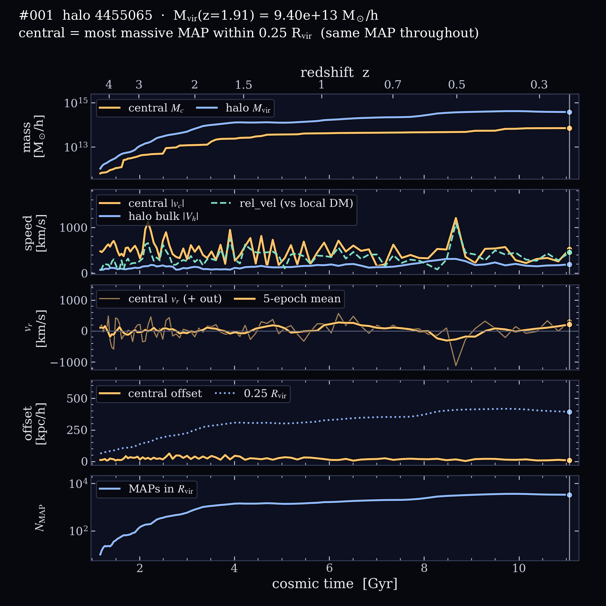
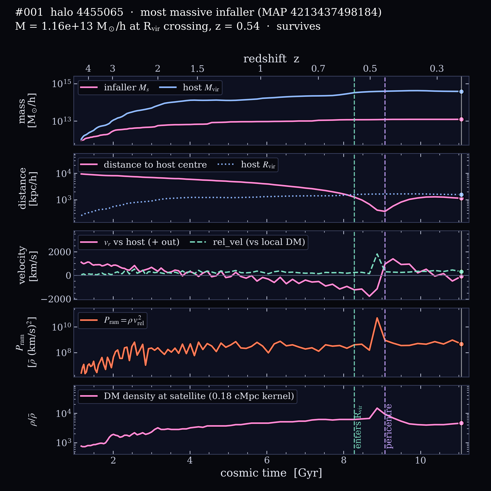

Rank #001 at z = 1.91 · AbacusAurora rockV2 c000 ph390
Halo 4455065
At z = 1.91 this is the most massive host in the box, with Mvir = 9.40 × 1013 M☉/h and Rvir = 1113 kpc/h, holding 1,075 MAPs. It grows 366× between z = 5 and 0.22 and reaches half its final mass by z = 0.85. Its largest growth spurt since z = 2 is ×1.51 in 0.25 Gyr (z = 2.13 → 1.96). The 15 × 15 × 5 h−1Mpc slab around it is 3.2× the cosmic mean density (the #3 densest surroundings of the 6 halos here), with 12 other hosts above 1012 M☉/h within 5 h−1Mpc. A massive group falls in at z ≈ 0.54; its central galaxy is followed in the second movie.
Colour schemeDeep-space blue dark matter, maps as small galaxy light profiles.
Central galaxy. The camera circles the halo’s main progenitor, always pointing at its centre. The cyan ring marks the central galaxy (the most massive MAP within 0.25 Rvir). Panels on the right fill in as the movie plays: central and halo mass, speeds, radial velocity, the central’s offset from the halo centre, and the number of MAPs in Rvir.Most massive infaller. The heaviest MAP to cross Rvir: 1.16 × 1013 M☉/h when it enters at z ≈ 0.54. It reaches pericentre at 0.22 Rvir (z ≈ 0.44), where its speed relative to the local dark matter is 312 km/s and its ram pressure Pram = ρ vrel2 peaks at 4.94 × 1010 ρ̄ (km/s)2. An edge arrow points to it while it is outside the frame.
At z = 1.91
Mvir
9.40 × 1013 M☉/h
Rvir
1113 kpc/h
Vmax
1146 km/s
Position
(148.0, 199.5, 175.9) h−1Mpc
MAPs in Rvir
1,075
median MAP Pram
3.98 × 108 ρ̄(km/s)2
Growth, z = 5 → 0.22
Mvir(z = 5)
1.04 × 1012 M☉/h
Mvir(z = 0.22)
3.80 × 1014 M☉/h
half-mass redshift
0.85
largest spurt since z = 2
×1.51 in 0.25 Gyr (z = 2.13 → 1.96)
central mass
6.27 × 1011 → 7.08 × 1013 M☉/h
central offset
median 21, max 64 kpc/h
peak central speed
1204 km/s at z ≈ 0.49
central swaps
0
MAPs in Rvir, z = 0.22
3,350
Environment at z = 1.91
slab density ⟨1+δ⟩
3.15 (15×15×5 h−1Mpc)
hosts > 1012 within 5 h−1Mpc
12
hosts > 1012 within 10 h−1Mpc
35
nearest more massive halo
none (most massive)

Full history. The same panels as the movie, drawn to the end.

Infaller history. Mass, distance from the host centre in Rvir, velocities, ram pressure and local density.